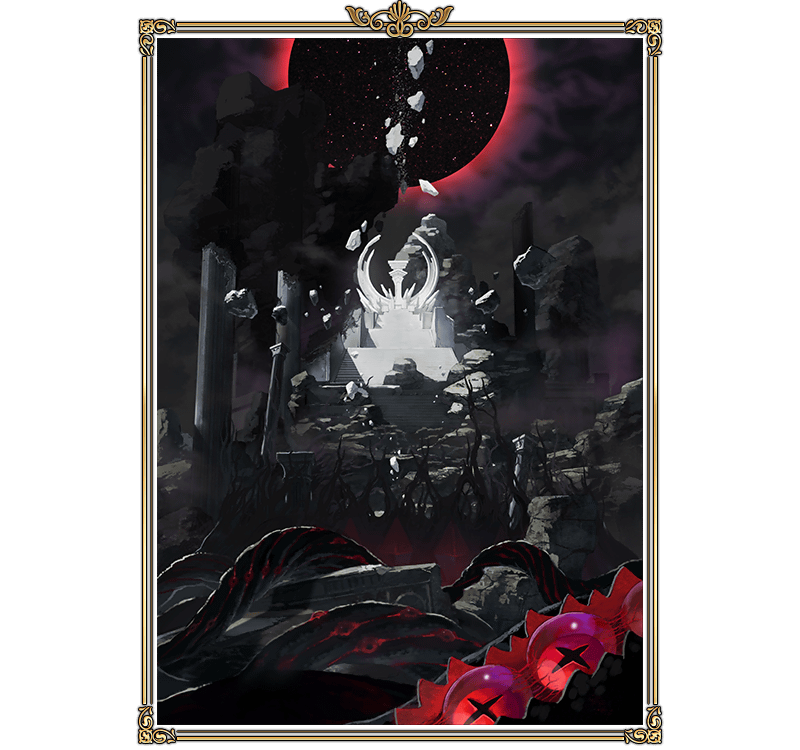

◆公開時日◆
2016年12月下旬預定
◆最終決戰，終於開幕◆
跨越無數困難後在前方等待的，是最後的試練「終局特異點 冠位時間神殿 所羅門」。
將目前為止與Servant們培養出的羈絆化為經驗，展開緊張刺激的戰鬥。
最後決戰，是除此期間無法參加，準備給全部Master合作擊倒敵人的特別關卡。
◆開放條件◆
通過「第七特異點 絕對魔獸戰線 巴比倫尼亞」後開放。
先行公開描繪「終局特異點 冠位時間神殿 所羅門」的印象插圖。
直到最終決戰開幕，現在請稍加等候。

在「終局特異點 冠位時間神殿 所羅門」的關卡，Servant的絆等級會發揮重要作用。
另外，關於絆等級跟隨著主線關卡的進行而上升的「瑪琇・基利艾拉特」，會賦予特別的效果。
加深與中意Servant的絆等級、強化「瑪琇・基利艾拉特」，挑戰最終決戰吧！